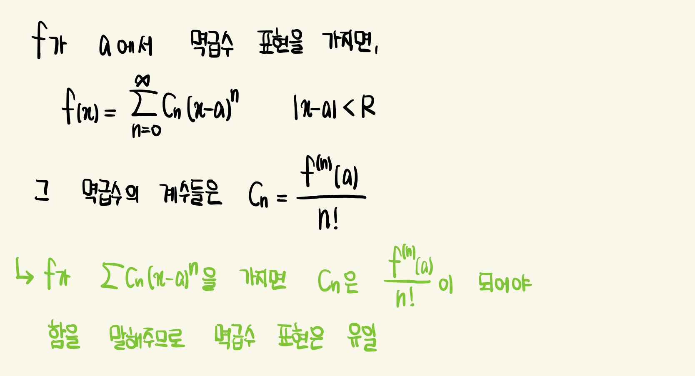
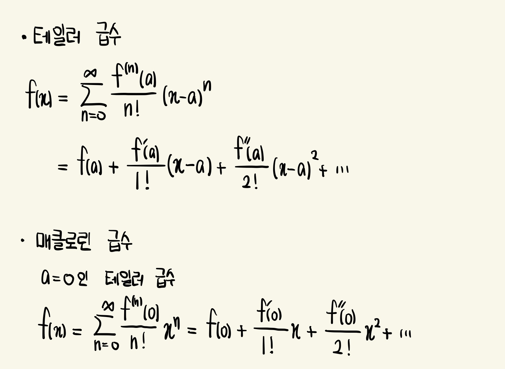
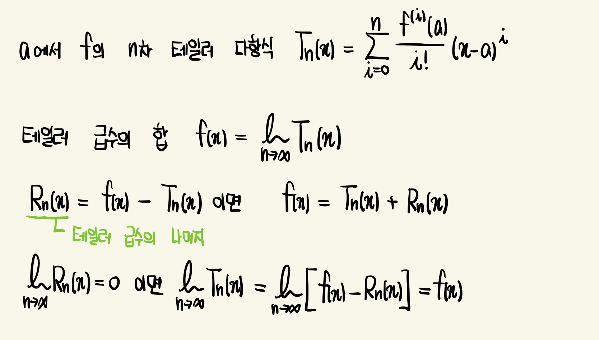
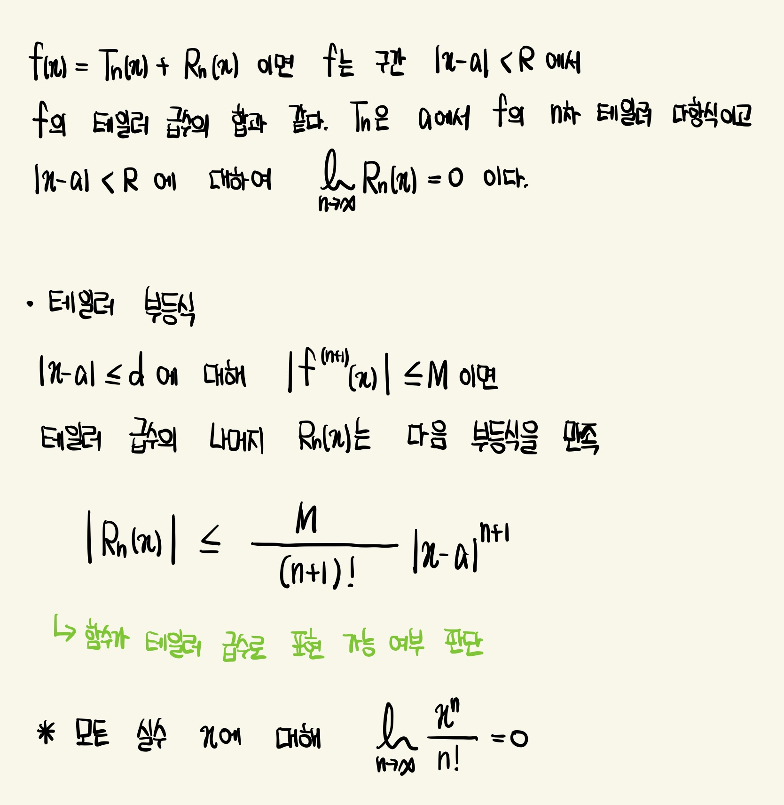
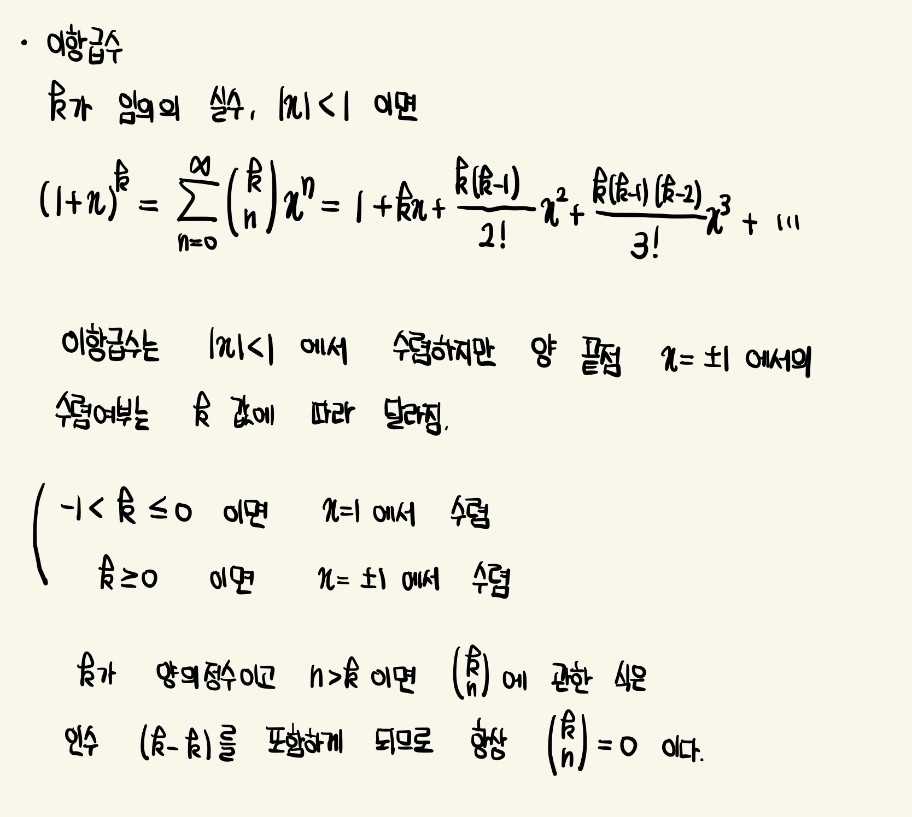
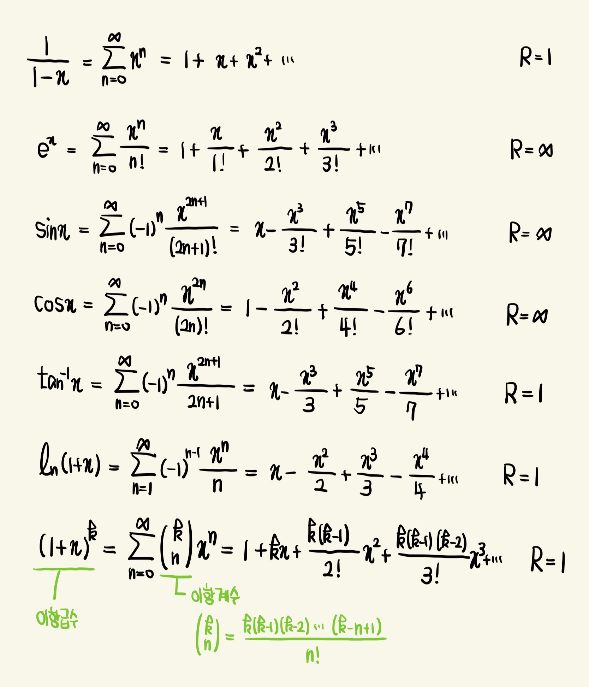

테일러 급수 & 매클로린 급수
 
함수가 테일러 급수로 표현되는 경우는 언제인지
 
이항급수

주요 매클로린 급수와 수렴반지름
계수 공식을 이용하거나 아래의 주요 급수를 조작하여 새로운 테일러 급수를 얻을 수 있음

 
함수가 테일러 급수로 표현되는 경우는 언제인지
 

계수 공식을 이용하거나 아래의 주요 급수를 조작하여 새로운 테일러 급수를 얻을 수 있음
